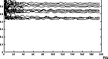
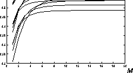

References


Next: About this document
Up: Performance Evaluation and Real-Time
Previous: Summary
References
- 1
-
R. Schmidt, ``Multiple emitter location and signal parameter estimation,'' RADC Spectrum Estimation Workshop, pp. 243 - 258, 1979.
- 2
-
B. Widrow and S. D. Stearns, Adaptive Signal Proccessing.
Prentice-Hall, Englewood Cliffs, NJ, 1985.
- 3
-
P. Mock, ``Add DTMF generation and decoding to DSP- designs,'' EDN, vol. 30, pp. 205-220, March 21 1985.
- 4
-
J. Y. Cheung, ``A direct adaptive frequency estimation technique,'' Midwest Symposium on Circuits and Systems, pp. 804 - 807, 1987.
- 5
-
F. A. Sakarya and G. Arslan, ``LMS ve MUSIC algoritmalari ile
DTMF alici tasarimi,'' Proc. 3. Sinyal leme ve
Uygulamalari Kurultayi, 1995.
- 6
-
J. Pino, S. Ha, E. Lee, and J. Buck, ``Software synthesis for DSP using
Ptolemy,'' Journal on VLSI Signal Processing, vol. 9, pp. 7-21, Jan.
1995.
- 7
-
CCITT Blue Book, Recommendation Q.23: Technical Features of Push-Button
Telephone Sets.
Geneva, 1989.
- 8
-
CCITT Blue Book, Recommendation Q.24: Multi-Frequency Push-Button Signal
Reception.
Geneva, 1989.
- 9
-
A. V. Oppenheim and R. W. Schafer, Discrete-Time Signal Processing.
Prentice-Hall, 1990.
- 10
-
Analog Devices, DSP Applications using the ADSP-2100 Family.
Prentice-Hall, 1992.
- 11
-
P. Stoica and A. Nehorai, ``MUSIC, Max. Likelihood, and Cramer-Rao
Bound,'' IEEE Trans. on Acoustics, Speech, and Sig. Proc., vol. 37,
no. 5, pp. 720-741, 1989.
- 12
-
D. S. Watkins, Fundamentals of Matrix Computations.
John Wiley & Sons, 1991.
- 13
-
E. A. Lee and D. G. Messerschmitt, ``Synchronous data flow,'' Proc. of the
IEEE, Sept. 1987.

Figure 1: Effect of total number of samples
on the efficiency ratio eff for  .
.

Figure 2: Change of efficiency ratio eff relative to the number of
samples with  .
.
ACKNOWLEDGEMENT
We would like to thank
Prof. Metin Yü cel from Yildiz Technical University (YTÜ ),
Luis J. Gutierrez from University of California at Berkeley, and
Onur Taç kin formerly from YTÜ, who indirectly
contributed to this work.
Brian L. Evans, 211-105 Cory Hall, Berkeley, CA 94720-1772